Khám phá thiết kế Super-agent: Hướng tới hệ thống agent tự chủ hơn
Bản dịch tiếng Việt của bài X Article Exploring Super-agent Design: Towards a More Autonomous Agent System bởi @DeepSeekHarness. Bài gốc ghi là bản dịch máy từ tiếng Trung; bản quyền thuộc DeepSeek Harness / DeepSeek. Prototype liên quan: dsh-superagent-prototype (GitHub). Bài dịch chỉ nhằm chia sẻ kỹ thuật; mọi quyền đối với nội dung gốc thuộc về tác giả/DeepSeek.
TL;DR
- Super-agent là agent liên tục, năng suất, chủ động và bền vững — vượt giới hạn agent gắn một session do người điều khiển thủ công.
- Kiến trúc hai tầng: Router sống lâu tương tác/điều phối; nhiều Worker cô lập ngữ cảnh chạy song song, không trả lời người trực tiếp.
- Đầu vào chính là Trigger sự kiện môi trường; lọc Fast/Slow Path, subscription + pass-through, Inline & Spill / Chain of Recall, và speculative execution.
- ReAct bất đồng bộ full-duplex + phản hồi theo kênh; tách compute, state bền vững và môi trường thực thi; Watchdog ngoài tự phục hồi.
- Thí nghiệm sơ bộ: Super-agent hoàn thành nhanh/ổn hơn single-session; pass-through cắt ~37% cache-read token của Router. Còn bài toán mở về scale, UX không-session, A2A và bảo mật.
Ba chế độ đọc: dùng 3 nút tròn ở góc dưới bên phải để chuyển nhanh (trên điện thoại, ba nút nằm thành một thanh ở cuối màn hình để không đè chữ bên phải). VI — bản dịch tiếng Việt đầy đủ, theo từng đoạn. EN — bản tiếng Anh, không tách cụm. Cụm (mặc định, biểu tượng A gạch dưới) — tiếng Anh tách thành các cụm theo mệnh đề; rê chuột hoặc chạm vào một cụm để xem nghĩa tiếng Việt. Chạm lần nữa hoặc chạm ra ngoài để đóng; với cụm chứa liên kết, trên điện thoại chạm lần đầu để xem nghĩa, chạm lần hai để mở liên kết. Chế độ được ghi nhớ trên máy này; có thể mở thẳng bằng ?mode=vi, ?mode=en hoặc ?mode=chunk.
Bài gốc viết bằng tiếng Trung. Đây là bản dịch từ bản tiếng Anh.
Bài viết thảo luận các ý tưởng kiến trúc, không phải giới thiệu tính năng hiện có của DeepSeek Harness.The original article was written in Chinese and translated into English.
This post discusses architectural ideas rather than existing DeepSeek Harness features.The original article was written in Chinese and translated into English. This post discusses architectural ideas rather than existing DeepSeek Harness features.
1. Super-agent
1. Super-agent
1. Super-agent
Trong năm qua, các coding agent và agent đơn nhiệm vụ đã cho thấy mô hình có thể dùng công cụ để giải bài toán phức tạp với ngày càng ít giám sát liên tục. Mô hình cũng giỏi điều phối nhiều agent qua các session, đưa vai trò con người lên các quyết định cấp cao và phê duyệt.
Over the past year, coding agents and single-task agents showed models can solve complex tasks using tools with less continuous supervision, and coordinate multi-agent workflows across sessions—shifting humans toward high-level decisions and approvals.
Over the past year, coding agents and single-task agents showed models can solve complex tasks using tools with less continuous supervision, and coordinate multi-agent workflows across sessions—shifting humans toward high-level decisions and approvals.
Mô hình tốt hơn cũng mở ra các ứng dụng mới như personal agent nối trực tiếp với nhắn tin, lịch, email và nền tảng làm việc hàng ngày. Cách làm việc luôn online, hướng sự kiện này cũng rất giá trị cho phát triển phần mềm thương mại.
Better models also enable always-on, event-driven personal agents wired into messaging, calendars, email, and work tools—an approach equally valuable in commercial software engineering.
Better models also enable always-on, event-driven personal agents wired into messaging, calendars, email, and work tools—an approach equally valuable in commercial software engineering.
Tuy nhiên, thiết kế agent lấy một session đơn lẻ làm đơn vị cơ bản gặp giới hạn lớn: một người thường chỉ theo dõi được khoảng 3–5 session cùng lúc. Một nhiệm vụ bị giới hạn bởi năng lực mô hình, nhưng đa nhiệm lại bị giới hạn bởi sự chú ý của con người.
However, session-bound agents hit a wall: a person can typically track only 3–5 active sessions at once. Single tasks are model-bound, but multitasking becomes human-attention-bound.
However, session-bound agents hit a wall: a person can typically track only 3–5 active sessions at once. Single tasks are model-bound, but multitasking becomes human-attention-bound.
Gắn thêm CLI, MCP hay connector vào agent local đơn-session vẫn giữ nguyên điểm nghẽn: vòng lặp đồng bộ bị chặn bởi tác vụ dài, ngữ cảnh các việc bị trộn lẫn, và mọi thứ dừng khi máy local tắt.
Bolting CLI, MCP, or connectors onto a local single-session agent leaves the core flaws intact: synchronous blocking on long tasks, mixed task contexts, and halting whenever the local machine goes offline.
Bolting CLI, MCP, or connectors onto a local single-session agent leaves the core flaws intact: synchronous blocking on long tasks, mixed task contexts, and halting whenever the local machine goes offline.
Vượt qua giới hạn này đòi hỏi tách agent khỏi mọi session đơn lẻ: agent phải là một thực thể liên tục, giữ ngữ cảnh xuyên suốt và chạy nhiều việc song song không nhiễu nhau — chúng tôi gọi đó là Super-agent.
Overcoming this means decoupling the agent from single manual sessions into a continuous entity that preserves cross-session context and runs parallel tasks without interference—what we call a Super-agent.
Overcoming this means decoupling the agent from single manual sessions into a continuous entity that preserves cross-session context and runs parallel tasks without interference—what we call a Super-agent.
Ví dụ, instance Super-agent nội bộ trên DeepSeek Harness có thể tiếp tục cùng một nhiệm vụ qua IM và GitHub, tự theo dõi nhóm chat công khai (dù không được @-mention) để tìm lỗi gốc và mở Pull Request sửa:
For example, our internal Super-agent on DeepSeek Harness continues a single task across IM and GitHub, and monitors public group chats—even without an @-mention—to diagnose root causes and open PR fixes:
For example, our internal Super-agent on DeepSeek Harness continues a single task across IM and GitHub, and monitors public group chats—even without an @-mention—to diagnose root causes and open PR fixes:
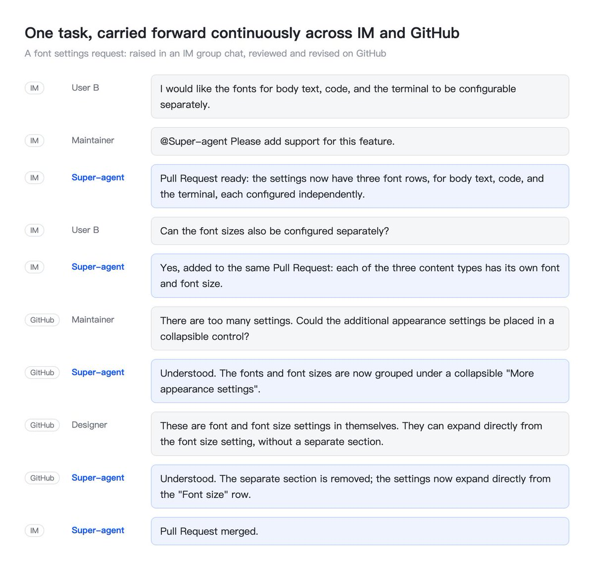
Cùng một nhiệm vụ tiếp tục qua nhóm chat IM và review Pull Request trên GitHub
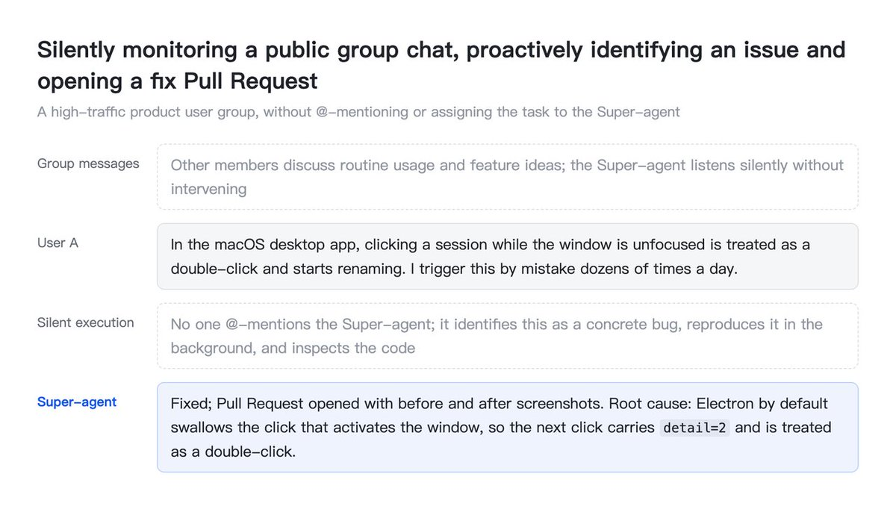
Agent theo dõi nhóm chat công khai và, dù không bị @-mention, tìm ra bug rồi mở Pull Request để sửa
Chúng tôi tin Super-agent có bốn đặc tính cốt lõi:
We believe a Super-agent has four core properties:
We believe a Super-agent has four core properties:
- Continuous (liên tục): Người dùng tương tác ngay trên IM hoặc GitHub như với một agent duy nhất — đổi từ Plan A trên chat sang Plan B trên PR, agent vẫn hiểu liền mạch.Continuous: Users interact in IM and GitHub with one unified agent—switching from Plan A in chat to Plan B on a PR seamlessly.Continuous: Users interact in IM and GitHub with one unified agent—switching from Plan A in chat to Plan B on a PR seamlessly.
- Productive (năng suất): Phản hồi nhanh, chạy song song nhiều việc ở chất lượng cao và nhận chỉ thị mới mà không cần chờ việc cũ xong.Productive: Responds fast, executes complex tasks in parallel at high quality, and accepts new instructions without blocking.Productive: Responds fast, executes complex tasks in parallel at high quality, and accepts new instructions without blocking.
- Proactive (chủ động): Theo dõi sự kiện môi trường, hành động khi đáng xử lý và im lặng khi không cần.Proactive: Monitors environment events, acts when warranted, and stays quiet otherwise.Proactive: Monitors environment events, acts when warranted, and stays quiet otherwise.
- Persistent (bền vững): Luôn online, nối trực tiếp môi trường làm việc thật và tự phục hồi khi gặp sự cố chạy dài.Persistent: Always online, connected to real work environments, and self-recovering across long runs.Persistent: Always online, connected to real work environments, and self-recovering across long runs.
Không vòng ReAct đơn lẻ nào đạt cả bốn tính chất này — chúng phải đến từ kiến trúc hệ thống xung quanh, áp dụng nhiều nguyên lý kinh điển của hệ thống máy tính.
No single ReAct loop delivers all four properties; they come from surrounding systems architecture drawing on classic computer systems design.
No single ReAct loop delivers all four properties; they come from surrounding systems architecture drawing on classic computer systems design.
Năm module tạo nên khung cơ bản: kiến trúc hai tầng (Mục 2), thiết kế hướng sự kiện (Mục 3), tương tác full-duplex đa kênh (Mục 4), tách compute/state/môi trường (Mục 5) và Watchdog (Mục 6).
Five modules form the backbone: two-level architecture (§2), event-driven triggers (§3), full-duplex multi-channel interaction (§4), compute/state/environment separation (§5), and an external Watchdog (§6).
Five modules form the backbone: two-level architecture (§2), event-driven triggers (§3), full-duplex multi-channel interaction (§4), compute/state/environment separation (§5), and an external Watchdog (§6).
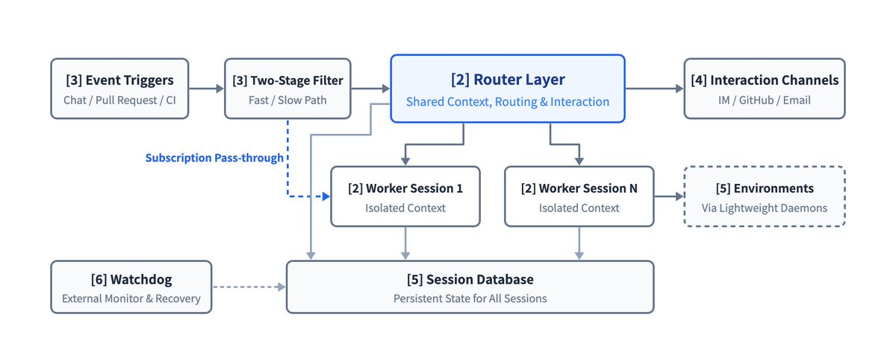
Tổng quan kiến trúc Super-agent, nhãn [2] đến [6] tương ứng Mục 2 đến Mục 6
2. Kiến trúc hai tầng
2. Two-level architecture
2. Two-level architecture
Hỗ trợ đồng thời tương tác liên tục và đa nhiệm năng suất tạo ra đánh đổi căn bản giữa tính liên tục và throughput trong cách tổ chức session.
Supporting continuous interaction alongside parallel throughput forces a fundamental trade-off between continuity and throughput.
Supporting continuous interaction alongside parallel throughput forces a fundamental trade-off between continuity and throughput.
Gom mọi thứ vào một session cho ngữ cảnh liên tục nhất nhưng ReAct chạy tuần tự khiến throughput thấp và nhiễu ngữ cảnh; ngược lại, mỗi sự kiện một session mới cho throughput cao nhưng rời rạc và rối khi trả lời.
One giant session maximizes continuity yet bottlenecks throughput and pollutes context; one session per event maximizes concurrency yet fragments global context and confuses replies.
One giant session maximizes continuity yet bottlenecks throughput and pollutes context; one session per event maximizes concurrency yet fragments global context and confuses replies.
Giải pháp là tách hai tầng: tầng Router sống lâu (Mục 2.1) giữ liên tục toàn cục và giao tiếp với người, còn tầng Worker cô lập ngữ cảnh (Mục 2.2) chạy nhiệm vụ song song.
Separating into two levels solves both: a long-lived Router layer (§2.1) handles user interaction and global coordination, while isolated Worker sessions (§2.2) execute tasks in parallel.
Separating into two levels solves both: a long-lived Router layer (§2.1) handles user interaction and global coordination, while isolated Worker sessions (§2.2) execute tasks in parallel.
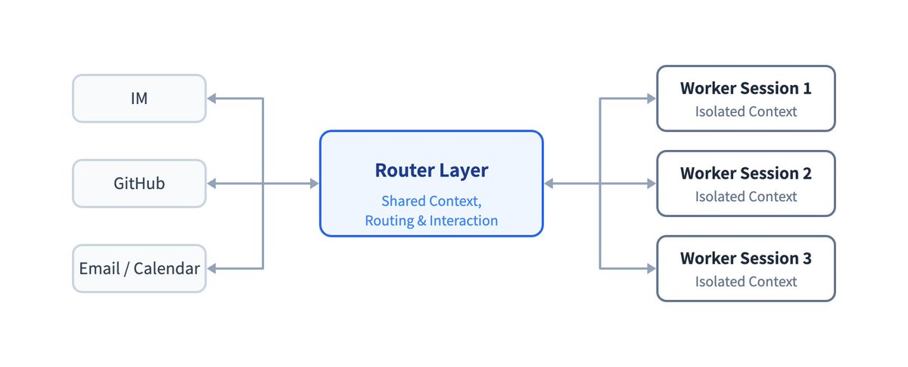
Kiến trúc hai tầng: tầng Router xử lý mọi định tuyến và tương tác bên ngoài, trong khi nhiều Worker Session cô lập thực thi nhiệm vụ đồng thời
Khi hệ thống tự lo quản lý ngữ cảnh và concurrency, session trở thành chi tiết triển khai ẩn bên dưới thay vì gánh nặng tư duy cho người dùng.
When the system manages context and concurrency, sessions become an internal implementation detail rather than mental overhead for users.
When the system manages context and concurrency, sessions become an internal implementation detail rather than mental overhead for users.
2.1 Tầng Router
2.1 Router layer
2.1 Router layer
Tầng Router là nút định tuyến toàn cục sống lâu, đóng vai trò bộ nhớ và điểm điều phối chung. Để tránh thành nút thắt, nó không tự thực thi nhiệm vụ (thậm chí không cần Bash tool) và có thể dùng mô hình nhẹ hơn.
The Router is a long-lived global coordinator and memory hub. To avoid bottlenecking, it never executes tasks itself (needing no Bash tool) and works well on a lighter model.
The Router is a long-lived global coordinator and memory hub. To avoid bottlenecking, it never executes tasks itself (needing no Bash tool) and works well on a lighter model.
Khác với Agent Team (nơi Team Lead thường phải lập kế hoạch chi tiết và điều phối liên tục gây tải nặng), Router chỉ phân phối nhiệm vụ ở mức cao và tự động gộp (batch) các sự kiện đến trong lúc đang suy luận để tính song song trong Prefill.
Unlike an Agent Team lead that micromanages tightly coupled steps, the Router dispatches high-level tasks and naturally batches queued Triggers into one Prefill pass—amortizing inference time per decision as load spikes.
Unlike an Agent Team lead that micromanages tightly coupled steps, the Router dispatches high-level tasks and naturally batches queued Triggers into one Prefill pass—amortizing inference time per decision as load spikes.
Kết hợp subscription, pass-through (Mục 3.2) và Chain of Recall (Mục 3.3), một Router Session duy nhất đã đủ cho quy mô nhóm hiện tại; khi cần scale lớn hơn có thể lọc nhiều tầng hoặc shard ngang.
Combined with pass-through (§3.2) and Chain of Recall (§3.3), one Router Session suffices for our current team scale before requiring multi-stage filtering or horizontal sharding.
Combined with pass-through (§3.2) and Chain of Recall (§3.3), one Router Session suffices for our current team scale before requiring multi-stage filtering or horizontal sharding.
2.2 Tầng Worker
2.2 Worker layer
2.2 Worker layer
Mỗi Worker Session có ngữ cảnh cô lập, bộ công cụ đầy đủ và thường dùng mô hình mạnh nhất. Worker không bao giờ trả lời người trực tiếp mà báo trạng thái lên Router; xung đột giữa các Worker cùng môi trường được phát hiện qua Thread đã subscribe.
Each Worker Session runs in isolated context with full tools on the strongest model, never messaging users directly—reporting upward to the Router while spotting peer conflicts via subscribed Threads.
Each Worker runs in isolated context with full tools on the strongest model, never messaging users directly—reporting upward to the Router while spotting peer conflicts via subscribed Threads.
3. Trigger theo sự kiện
3. Event-driven triggers
3. Event-driven triggers
Đầu vào chính của Super-agent không còn là prompt người gõ từng cái mà là Trigger từ môi trường (IM, email, lịch, code review, CI), đi qua 4 bước: lọc hai giai đoạn, định tuyến subscription/pass-through, tổ chức ngữ cảnh Inline & Spill / Chain of Recall, và hành động trước (speculative execution).
Instead of manual prompts, Super-agent runs on environment Triggers (IM, email, calendar, PR comments, CI) flowing through four stages: two-stage filtering, subscription/pass-through routing, Inline & Spill / Chain of Recall, and speculative execution.
Instead of manual prompts, Super-agent runs on environment Triggers (IM, email, calendar, PR comments, CI) flowing through four stages: two-stage filtering, subscription/pass-through routing, Inline & Spill / Chain of Recall, and speculative execution.
3.1 Lọc sự kiện
3.1 Event filtering
3.1 Event filtering
Vì luồng chat/CI rất nhiễu, hệ thống dùng lọc hai giai đoạn kiểu Fast Path / Slow Path: chính sách lập trình (nguồn, nhóm, allowlist) loại hầu hết tin thừa trước, rồi chính sách ngữ nghĩa bằng LLM mới phán phần ứng viên còn lại.
Because live streams are noisy, two-stage Fast/Slow Path filtering lets deterministic code policies drop irrelevant traffic cheaply before an LLM semantic filter evaluates candidates.
Because live streams are noisy, two-stage Fast/Slow Path filtering lets deterministic code policies drop irrelevant traffic cheaply before an LLM semantic filter evaluates candidates.
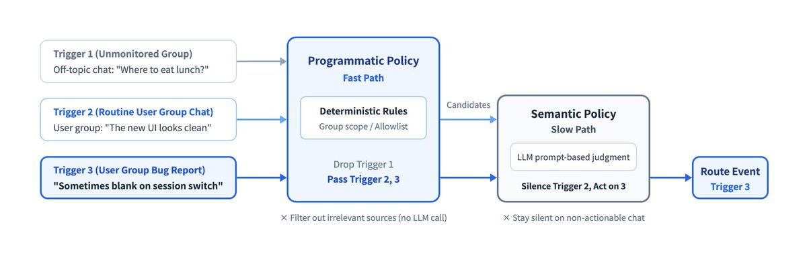
Lọc hai giai đoạn: chính sách lập trình sàng hầu hết tin không liên quan trước, chính sách ngữ nghĩa phán phần còn lại
3.2 Định tuyến sự kiện
3.2 Event routing
3.2 Event routing
Các sự kiện cùng PR, chủ đề IM hay chuỗi email tạo thành một Thread. Sự kiện đầu đi qua Router để tạo Worker và subscribe Thread đó; các sự kiện follow-up đi thẳng (pass-through) tới Worker đã subscribe theo Fast Path.
Events on the same PR, IM topic, or email chain form a Thread. The first event goes through the Router to spawn and subscribe a Worker; follow-ups pass directly to subscribed Workers on the Fast Path.
Events on the same PR, IM topic, or email chain form a Thread. The first event goes through the Router to spawn and subscribe a Worker; follow-ups pass directly to subscribed Workers on the Fast Path.
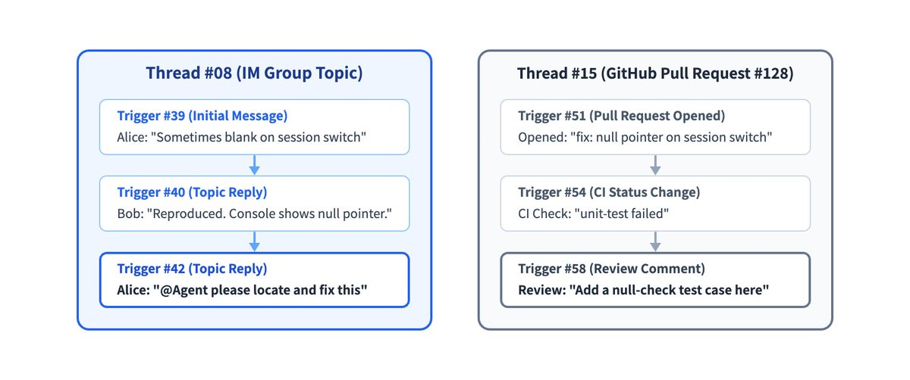
Ví dụ Thread: các Trigger liên tiếp dưới cùng chủ đề IM hoặc Pull Request GitHub tạo thành một Thread
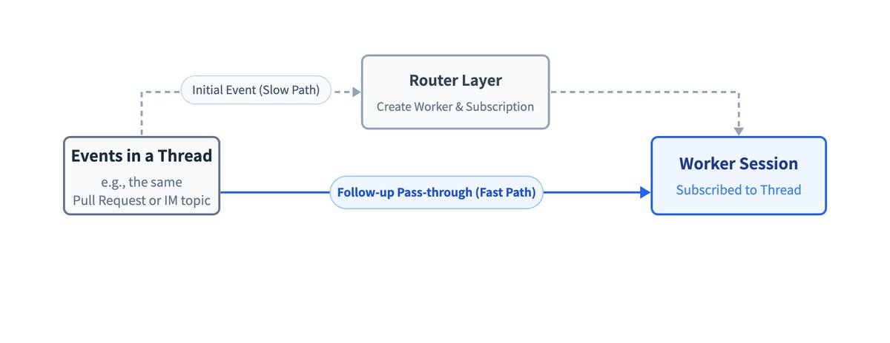
Subscription và pass-through: sự kiện đầu qua tầng Router để tạo Worker đã subscribe, các sự kiện follow-up cùng Thread đi thẳng tới Worker đó
3.3 Tổ chức ngữ cảnh
3.3 Context organization
3.3 Context organization
Coi cửa sổ ngữ cảnh hữu hạn như một cache: áp dụng Inline & Spill theo locality (chỉ inline ID, tóm tắt và ngữ cảnh kề cận; spill phần dài ra ngoài kèm pointer) và nối mọi đối tượng bằng ID thành đồ thị Chain of Recall để Router truy hồi nhiều hop theo nhu cầu.
Treating the context window as a cache, Inline & Spill inlines nearby summaries/IDs while spilling long payloads behind pointers, and Chain of Recall links objects by ID so the Router can retrieve multi-hop context on demand.
Treating the context window as a cache, Inline & Spill inlines nearby summaries/IDs while spilling long payloads behind pointers, and Chain of Recall links objects by ID so the Router can retrieve multi-hop context on demand.
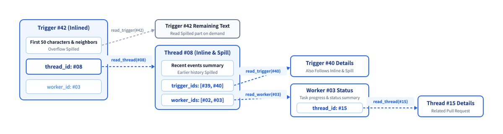
Chain of Recall: mỗi đối tượng được recall inline ID các đối tượng hop kế, để ngữ cảnh mở rộng từng hop theo tham chiếu
3.4 Hành động trước
3.4 Acting ahead
3.4 Acting ahead
Mượn speculative execution: dựa trên tín hiệu môi trường, agent chủ động tái hiện lỗi, kiểm tra lịch hoặc soạn bản nháp ở nền — chỉ giao kết quả khi xác nhận hữu ích, còn không thì giữ im lặng.
Borrowing speculative execution, the agent investigates issues, checks calendars, or drafts fixes in the background—delivering results only when verified useful and staying silent otherwise.
Borrowing speculative execution, the agent investigates issues, checks calendars, or drafts fixes in the background—delivering results only when verified useful and staying silent otherwise.
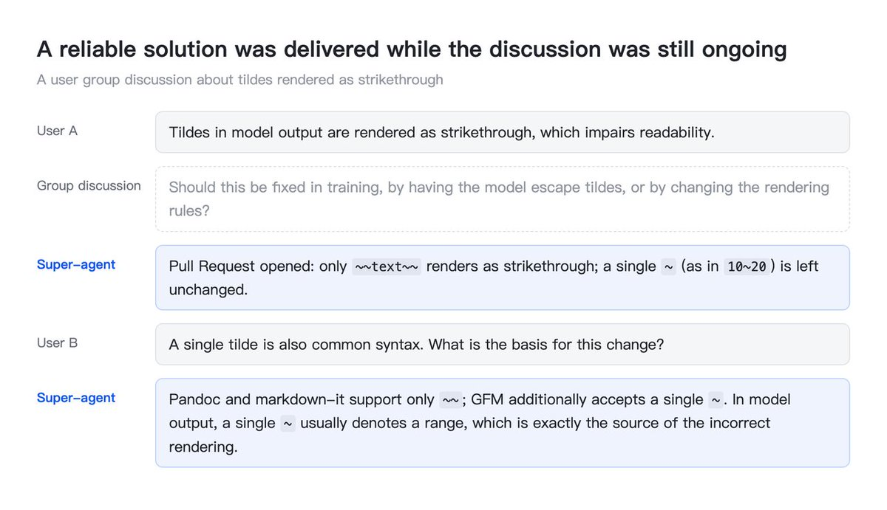
Ví dụ speculative execution: trong khi nhóm còn đang thảo luận giải pháp, Super-agent đã mở Pull Request với bản sửa ở nền
4. Tương tác full-duplex đa kênh
4. Full-duplex multi-channel interaction
4. Full-duplex multi-channel interaction
4.1 Full-Duplex
4.1 Full-Duplex
4.1 Full-Duplex
Thay run() đồng bộ bằng start()/stop() bất đồng bộ để chuyển sang ReAct full-duplex: lệnh dài chạy nền trả “Started” ngay, còn hội thoại foreground vẫn nhận chỉ thị mới mà không bị chặn.
Replacing synchronous run() with async start()/stop() enables full-duplex ReAct: long tools return “Started” immediately while foreground chat keeps accepting new input.
Replacing synchronous run() with async start()/stop() enables full-duplex ReAct: long tools return “Started” immediately while foreground chat keeps accepting new input.
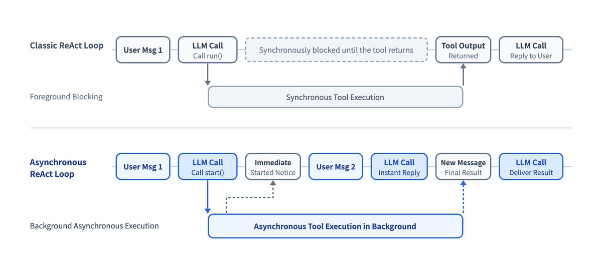
So sánh vòng ReAct cổ điển và bất đồng bộ: lời gọi bất đồng bộ trả thông báo Started ngay, và session vẫn phản hồi tin mới trong khi tool nền chạy
4.2 Đa kênh
4.2 Multi-channel
4.2 Multi-channel
Điều chỉnh độ chi tiết theo kênh: IM giữ ngắn gọn (giới hạn cứng ~100 từ, chỉ hỏi khi cần chốt), còn kênh bất đồng bộ như GitHub PR, email hoặc tài liệu thì xuất đầy đủ bối cảnh và bằng chứng kiểm chứng.
Tailor verbosity by channel: keep IM concise (e.g., a 100-word cap, pinging only for decisions), while async channels like GitHub PRs and email get structured context and verification details.
Tailor verbosity by channel: keep IM concise (e.g., a 100-word cap, pinging only for decisions), while async channels like GitHub PRs and email get structured context and verification details.
5. Tách compute, state và môi trường
5. Separating compute, state, and environments
5. Separating compute, state, and environments
5.1 Tách compute khỏi state
5.1 Separating compute from state
5.1 Separating compute from state
Chạy Agent Loop trong container stateless trên đám mây và lưu session state bền vững trong database, để agent vẫn online khi máy cá nhân ngủ hoặc mất mạng.
Run the Agent Loop in stateless cloud containers backed by durable database state so the agent stays online even when local devices sleep.
Run the Agent Loop in stateless cloud containers backed by durable database state so the agent stays online even when local devices sleep.
5.2 Tách compute khỏi môi trường thực thi
5.2 Separating compute from execution environments
5.2 Separating compute from execution environments
Thay vì đồng bộ cả môi trường nặng state lên cloud sandbox, đặt daemon nhẹ trên máy của người dùng (BYOM — Bring Your Own Machine) để giữ thay đổi chưa commit, credential local và toolchain tại chỗ.
Instead of cloning heavy local environments into cloud sandboxes, run a lightweight daemon on user machines (BYOM) so uncommitted edits, local credentials, and toolchains stay put.
Instead of cloning heavy local environments into cloud sandboxes, run a lightweight daemon on user machines (BYOM) so uncommitted edits, local credentials, and toolchains stay put.
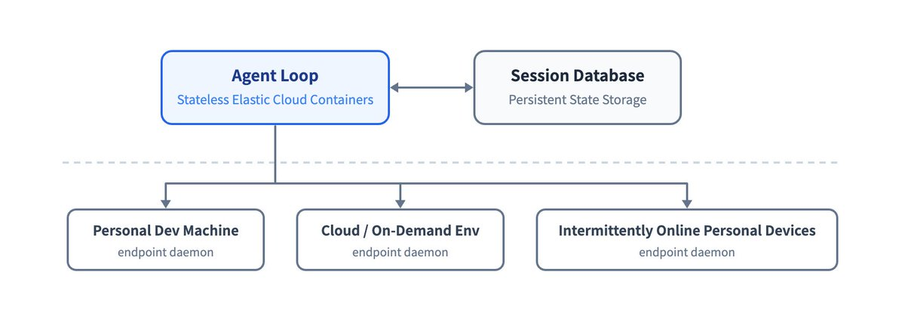
Tách compute–storage và môi trường thực thi tách rời: trên đám mây, Agent Loop tách khỏi state bền vững và với tới các môi trường thực thi khác nhau theo nhu cầu qua daemon endpoint
6. Watchdog
6. Watchdog
6. Watchdog
Watchdog Session độc lập bên ngoài hệ thống chính chạy định kỳ: không chỉ xử lý lỗi hạ tầng mà còn dùng LLM kiểm tra xem Worker có kẹt vòng lặp hay lệch mục tiêu, và cho phép người bảo trì hỏi hoặc chỉnh rule trực tiếp bằng ngôn ngữ tự nhiên.
An external Watchdog Session runs on a schedule to recover infra errors, inspect whether Workers are stuck in loops or drifting off-goal, and let maintainers query or tweak rules in plain English.
An external Watchdog Session runs on a schedule to recover infra errors, inspect whether Workers are stuck in loops or drifting off-goal, and let maintainers query or tweak rules in plain English.
7. Thí nghiệm sơ bộ
7. Preliminary experiments
7. Preliminary experiments
7.1 Nghiên cứu ablation
7.1 Ablation study
7.1 Ablation study
Trên workload mô phỏng 300 tin nhắn (5 lần chạy mỗi thiết kế), Super-agent đạt p50 12,4 phút và p95 15,7 phút — nhanh và ổn định hơn hẳn Single Session với Subagent tool (p95 tới 29,0–29,5 phút); cơ chế pass-through cắt tổng cache-read token từ 31,8M xuống 23,2M (~37%).
Across 5 runs of a 300-message synthetic workload, Super-agent reached 12.4m p50 and 15.7m p95—far faster and steadier than single-session subagent setups (29.0–29.5m p95)—while pass-through cut Router cache-read tokens from 31.8M to 23.2M (~37% savings).
Across 5 runs of a 300-message synthetic workload, Super-agent reached 12.4m p50 and 15.7m p95—far faster and steadier than single-session subagent setups (29.0–29.5m p95)—while pass-through cut Router cache-read tokens from 31.8M to 23.2M (~37% savings).
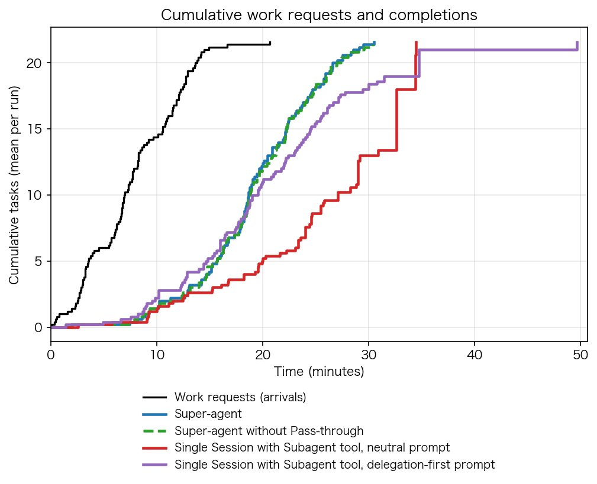
Số yêu cầu công việc đến tích lũy và số hoàn thành tích lũy dưới mỗi trong bốn thiết kế (trung bình 5 lần chạy; khoảng tin và thời lượng công việc scale 1/4; thời gian gọi mô hình không scale)
| Thiết kế | Thời gian hoàn thành p50 / p95 (phút) | Cache-read token mỗi lần chạy (mọi session) |
|---|---|---|
| Super-agent | 12.4/15.7 | 23.2M |
| Super-agent không Pass-through | 12.6/15.5 | 31.8M |
| Single Session với Subagent tool, prompt trung lập | 20.4/29.5 | 6.1M |
| Single Session với Subagent tool, prompt ủy thác | 13.8/29.0 | 10.8M |
7.2 Batching tầng Router
7.2 Router-layer batching
7.2 Router-layer batching
Khi tốc độ Trigger tăng từ ~1 lên ~40/phút, kích thước batch trung bình tăng từ 1,0 lên 2,8 nhưng thời gian mỗi request chỉ nhích từ 2,5s lên 3,9s — giúp thời gian suy luận tính trên mỗi quyết định giảm từ 6,4s xuống 1,6s.
As Trigger rate climbed from ~1 to ~40/min, average batch size rose from 1.0 to 2.8 while request latency grew only from 2.5s to 3.9s—dropping amortized inference time per decision from 6.4s to 1.6s.
As Trigger rate climbed from ~1 to ~40/min, average batch size rose from 1.0 to 2.8 while request latency grew only from 2.5s to 3.9s—dropping amortized inference time per decision from 6.4s to 1.6s.
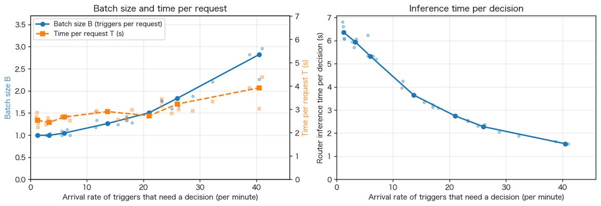
Kích thước batch, thời gian mỗi request, và thời gian suy luận amortize mỗi quyết định của Router Session ở các tốc độ đến Trigger khác nhau
8. Các bài toán mở
8. Open problems
8. Open problems
Bốn hướng còn bỏ ngỏ: (8.1) khi nào cần shard tầng Router và cho Worker giao tiếp ngang hàng khi quy mô vượt một Router + bộ nhớ dài hạn hàng tháng; (8.2) thiết kế UX không gắn session cho phép người dùng can thiệp giữa chừng; (8.3) định nghĩa biên ngữ cảnh và giao tiếp A2A giữa các instance khác quyền; và (8.4) bảo mật/riêng tư khi Agent Loop trên cloud nhận đầu vào ngoài không tin cậy trong lúc nối tới endpoint giữ secret local.
Four open directions remain: (8.1) scaling/sharding the Router and long-term memory over months; (8.2) sessionless UX for mid-flight human steering; (8.3) context boundaries and A2A collaboration across trust domains; and (8.4) security/privacy so cloud loops never leak or abuse endpoint credentials under prompt injection.
Four open directions remain: (8.1) scaling/sharding the Router and long-term memory over months; (8.2) sessionless UX for mid-flight human steering; (8.3) context boundaries and A2A collaboration across trust domains; and (8.4) security/privacy so cloud loops never leak or abuse endpoint credentials under prompt injection.
9. Kết luận
9. Conclusion
9. Conclusion
Thay vì lý thuyết mới, thiết kế này mượn các nguyên lý kinh điển của hệ thống máy tính để giải nút thắt mới là sự chú ý của con người — biến agent từ cửa sổ chat thụ động thành cộng sự tự chủ luôn online. Phần prototype mã nguồn mở được công bố tại dsh-superagent-prototype.
Rather than inventing new theory, this architecture applies classic systems engineering to shift the bottleneck off human attention—turning agents from passive chat boxes into always-on collaborators (prototyped in dsh-superagent-prototype).
Rather than inventing new theory, this architecture applies classic systems engineering to shift the bottleneck off human attention—turning agents from passive chat boxes into always-on collaborators (prototyped in dsh-superagent-prototype).
Know-how & Insight
Ghi chú của người dịch — không phải lời của tác giả
Bài DeepSeek Harness phác kiến trúc hệ thống cho agent luôn online, không phải feature đã GA. Gợi ý áp dụng khi dựng bot nội bộ / CI agent:
- Tách “điều phối” khỏi “làm việc”. Một session vừa chat vừa chạy tool dài sẽ nghẽn; Router mỏng + Worker mạnh khớp pattern lead/worker trong team agent.
- Sự kiện môi trường thay vì chỉ prompt. Nối IM, GitHub, CI làm Trigger; lọc deterministic trước rồi mới LLM — giảm chi phí và độ trễ trên kênh nhiễu.
- Pass-through / subscribe Thread. Follow-up cùng PR hoặc topic đi thẳng Worker đã nhận việc; Router chỉ cold-start và điều phối xuyên nhiệm vụ.
- Ngữ cảnh như cache. Inline tóm tắt + ID, Spill phần dài, Chain of Recall theo đồ thị tham chiếu — hữu ích khi Router sống lâu không nhét hết lịch sử.
- Full-duplex và tách máy. start/stop bất đồng bộ để chat không bị chặn; Agent Loop trên cloud + daemon trên máy dev giữ credential/local change tại chỗ.
- Watchdog ngoài vòng chính. Giám sát cả hang logic chứ không chỉ process alive; và nhớ bài toán bảo mật khi cloud điều khiển endpoint có secret.
Lưu ý: số liệu thí nghiệm là workload tổng hợp chỉ báo; prototype công khai là dsh-superagent-prototype, không phải sản phẩm chính thức DeepSeek. Cập nhật ba chế độ đọc.
Mindmap
mindmap
root((Super-agent))
Bốn đặc tính
Liên tục
Năng suất
Chủ động
Bền vững
Kiến trúc hai tầng
Router sống lâu
Worker cô lập
Batching sự kiện
Trigger sự kiện
Lọc Fast Slow
Subscribe pass-through
Inline Spill Recall
Speculative exec
Tương tác
Full-duplex ReAct
Đa kênh IM GitHub
Hạ tầng
Tách compute state
BYOM daemon
Watchdog
Thí nghiệm và mở
Ablation
Scale A2A bảo mật